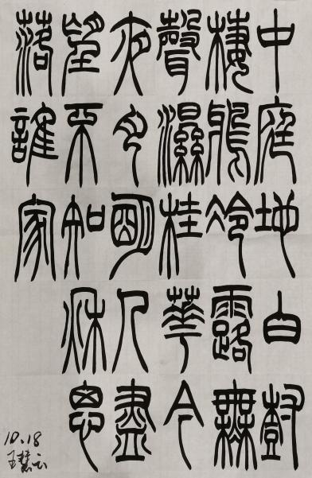
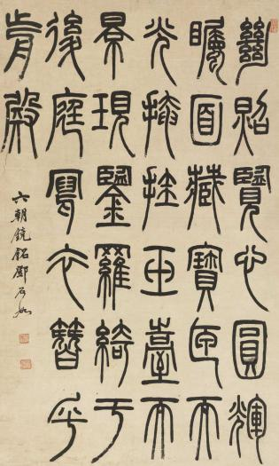

殷周时期，铸刻在钟鼎彝器上的铭文即金文又称钟鼎文广泛流行。秦始皇大统后，统称为小篆,也称 秦篆，所谓篆书，其实就是掾书，就是官书。是一种规范化的官方文书通用字体。据文献记载。秦以前汉字书体并无专门名称。而小篆是由春秋战国时代的秦国文字逐渐演变而成的。由于是官书。小篆只适合于隆重的场合。如记功刻石。叔量诏版。兵虎符之类。标准篆书体的体式是排列整齐。行笔圆转。线条匀净而长。呈现出庄严美丽的风格。
与甲骨文、金文相比，具有这样一些基本特征：字形修长。而且紧画 向下引伸。构成上密下疏的视觉错感。这与自上而下的章法布局也有关系。线条匀称无论点画长短。笔画均呈粗细划一的状态。这种在力度。速度都很匀平的运笔。给人以纯净简约的美感这两种特征。加之字体结构的趋简约固定的倾向。小篆书体的章法布局更能形成纵横成行的序性。秦篆有圆笔方笔之别。圆笔以 秦刻石为代表。方笔以秦诏版权量为代表。为秦篆之俗体。汉魏之际是秦篆的强弩之末。除用于碑铭篆额 和器物款识之外。难得有独立的篆书。唐篆。因李阳冰出而复苏。仁秦篆的浑厚宏伟之气已荡然无存。宋代金石之学和元朝的复古书风。使用权篆书得以起微潮。以篆书著称者不乏其人但乏超越之力。明代承元之风。步趋持平。清朝篆书百花斗艳。进入了推唐超秦的大繁荣阶段。
小篆的鼻祖，李斯，字通古，战国时代上蔡人(今河南上蔡县)。后做了秦相，整理制定了秦代的标准书体小篆。现存于西安碑林的《峄山碑》，系宋代摹刻。所书的刻石多已毁没,存世的原石仅两块。相传秦代金、石刻文都出自李斯之手。百废待兴，因此秦国有众所周知的七个同一，其中文字长短常重要的一项，而李斯的小篆便是在秦国原有篆书基础上统一八国文字的结晶。金刻有权、量、诏版，石刻有峄山、泰山、琅琊台、之罘、碣石、会稽。因而秦代书法最闻名的便是以秦小篆书体所书之刻石文字。李斯所处的秦代是我国历史上的一个重要时期，秦始皇灭六国，统一天下，将战国时期的混乱局面一扫而平。李斯后为赵高所诬，腰斩于咸阳，时年约七十岁。端庄、凝重乃至有几分肃穆之感的秦刻石，向我们揭示出当年在中心集权独裁统治下秦帝国的概况。统一后的秦国强盛异常，表现在书体文字中也必定与之相适应。但书法大家、引碑入草开创者、北京大学教授李志敏先生认为秦始皇统一六国文字，对当时的社会进步有积极意义，但未必有利于书法艺术的发展。
篆体书法在魏晋以后走向式微，到了唐代以李阳冰为代表。篆体书法在清代迎来了第二次创造高峰，出现了一大批善篆书家如王澍、钱沾、邓石如、吴让之、赵之谦、吴昌硕等。建国以后篆书代表人物有王福庵、韩天衡、王友谊、沙孟海、黄宾虹、刘江、来楚生、邓散木、张辛、陆维钊、倪和军、商承祚、徐无闻等。
笔法瘦劲挺拔，曲线较多，直线较少。起笔有方笔、圆笔，也有尖笔，收笔“悬针”较多。大篆指金文、籀文、六国文字，它们保存着古代象形文字的明显特点。小篆也称“秦篆”，是秦国的通用文字，大篆的简化字体，其特点是形体均匀齐整、字体较籀文容易书写。